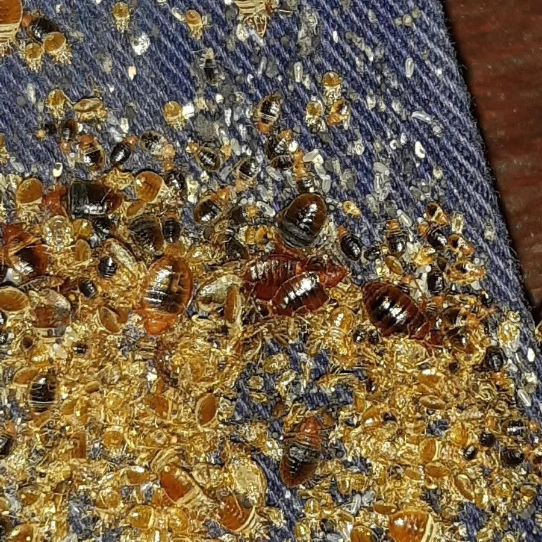

昆虫 · 动物界
温带臭虫 Cimex lectularius

全球性的室内吸血昆虫，白天藏在床缝和家具缝隙中，夜间出来叮咬人体，被咬处会红肿瘙痒，防治需专业处理。
- 分类
- 门节肢动物门纲昆虫纲目半翅目科臭虫科属臭虫属
- 栖息环境
- 床垫、床架、沙发、墙纸接缝、家具缝隙与衣物中
- 地理分布
- 全球分布，城市和人口密集地区更常见
- 保护级别
- IUCN 暂无评估；中国常见卫生害虫，无保护级别
物种志
温带臭虫成虫体长 4–6 毫米，身体呈红褐色、扁平椭圆形，没有翅膀，头部短小，有一对臭腺能分泌特殊气味；六足粗短，善于在缝隙中爬行。它在吸血前身体扁平，吸饱血后会膨胀变长，颜色也变得更红。
它呈世界性分布，在中国和许多国家的城市中都有发生，主要栖息于床垫、床架、沙发、墙纸接缝和家具缝隙中，夜间出来叮咬人体，吸食血液。被叮咬后皮肤会出现红肿、剧烈瘙痒的丘疹，搔抓可能继发感染。温带臭虫雌虫一生可产卵 200–500 枚，卵粘在缝隙中，若虫经五次蜕皮后成熟，一代约 1–2 个月。它不会飞行，主要靠行李、家具和衣物传播；发现后应请专业机构进行化学防治和高温处理，并彻底清洗床品，避免自行使用农药造成中毒风险。
形态与习性
- 食性吸食人体血液
- 体长成虫 4–6 mm，吸血后膨胀
- 寿命成虫可存活 6–12 个月
- 繁殖雌虫一生可产卵 200–500 枚，一代约 1–2 个月
- 活动节律夜行性，白天藏在缝隙中
- 危害叮咬引起红肿瘙痒，搔抓可能继发感染
趣味知识
- 温带臭虫没有翅膀，主要靠行李、衣物和旧家具传播到新的房间。
- 它白天藏在床缝和墙缝里，夜间才出来吸血，因此很难被发现。
- 发现臭虫应请专业机构处理，不要自行乱用农药，以免发生中毒。